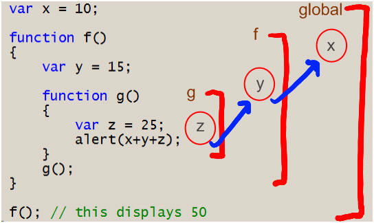

link to MDN - Operator precedence
SORAX - Sorax__blog
string
string.length - длина строки -> string.length - 1
string.chartAt(n) - возвращает указанный символ из строки (n - целое число от 0 до длины строки минус 1)
string.string[n] - возвращает указанный символ из строки (n - целое число от 0 до длины строки минус 1)
string.substring(n) - часть строки от n до конца. Вторым параметром указывается до какого индекса выборка (n,m)
string.slice(-n) - тоже, что и верхний пример, но благодаря "-" номирация происходит с конца
string.substr(n,m) - n - индекс начала, m - число символов
string.indexOf("n") - поиск символа или слова
string.lastIndexOf("n") - поиск с конца
string.replace("n","m") - замена n на m
string.split(" ") - выбираем разделитель, например пробел и разбиваем строку на масив
string.toUpperCase() - верхний регистр
string.toLowerCase() - нижний регистр
typeof() - узнать тип
isFinite() - является ли число конечным
isNaN()
split(' ').join('')
boolean
boolean(n) - true or false
boolean(undefined)
boolean(null)
boolean(0)
boolean(NaN)
boolean("")
|
-> false, (!!undefined)
-> false, (!!null)
-> false, (!!0)
-> false, (!!NaN)
-> false, (!!""). а (!![]), (!!{}) -> true
|
Логические операторы
true && false false && true true && true && |
-> false -> false -> true -> возвращает истину, когда оба операнда - истина |
false || false true || false false || true || |
-> false -> true -> true -> возвращает истину, коггда хотябы лодин операнд - истина |
!true !false |
-> false -> true |
Number("n") - перевести в числовой тип
+"n" - преобразование в числовой тип (унарный плюс - игнорируются пробелы перед числом)
parseInt("n", 10) - преобразование в числовой тип (игнорируются пробелы перед числом и все символы после)
parseFloat("n") - преобразование в числовой тип
String(n) - перевести в строку
n + "" - преобразование в строку
.toString() - преобразование в строку
Boolean(n) - перевести в boolean
!!n - преобразование в boolean
n.toFixed(2) - округляет число n до 2 знаков после запятой.
Методы массивов
Добавление/удаление элементов
arr.push(...items) – добавляет элементы в конец
arr.pop() – извлекает элемент из конца
arr.shift() – извлекает элемент из начала
arr.unshift(...items) – добавляет элементы в начало
синтаксис:
arr.splice(index[, deleteCount, elem1, ..., elemN])
let arr = ["Я", "изучаю", "JavaScript"];
arr.splice(1, 1);
alert( arr ); // осталось ["Я", "JavaScript"]
let arr = ["Я", "изучаю", "JavaScript", "прямо", "сейчас"];
// удалить 3 первых элемента и заменить их другими
arr.splice(0, 3, "Давай", "танцевать");
alert( arr ) // теперь ["Давай", "танцевать", "прямо", "сейчас"]
let arr = ["Я", "изучаю", "JavaScript", "прямо", "сейчас"];
// удалить 2 первых элемента
let removed = arr.splice(0, 2);
alert( removed ); // "Я", "изучаю" <-- массив из удалённых элементов
let arr = ["Я", "изучаю", "JavaScript"];
// с позиции 2
// удалить 0 элементов
// вставить "сложный", "язык"
arr.splice(2, 0, "сложный", "язык");
alert( arr ); // "Я", "изучаю", "сложный", "язык", "JavaScript"
let arr = [1, 2, 5];
// начиная с индекса -1 (перед последним элементом)
// удалить 0 элементов,
// затем вставить числа 3 и 4
arr.splice(-1, 0, 3, 4);
alert( arr ); // 1,2,3,4,5
синтаксис:
arr.slice([start], [end])
let arr = ["t", "e", "s", "t"];
alert( arr.slice(1, 3) ); // e,s (копирует с 1 до 3)
alert( arr.slice(-2) ); // s,t (копирует с -2 до конца)
синтаксис:
arr.concat(arg1, arg2...)
Он принимает любое количество аргументов, которые могут быть как массивами, так и простыми значениями.
let arr = [1, 2];
// создать массив из: arr и [3,4]
alert( arr.concat([3, 4]) ); // 1,2,3,4
// создать массив из: arr и [3,4] и [5,6]
alert( arr.concat([3, 4], [5, 6]) ); // 1,2,3,4,5,6
// создать массив из: arr и [3,4], потом добавить значения 5 и 6
alert( arr.concat([3, 4], 5, 6) ); // 1,2,3,4,5,6
Обычно он просто копирует элементы из массивов.
Другие объекты, даже если они выглядят как массивы, добавляются как есть:
let arr = [1, 2];
let arrayLike = {
0: "что-то",
length: 1
};
alert( arr.concat(arrayLike) ); // 1,2,[object Object]
…Но если объект имеет специальное свойство Symbol.isConcatSpreadable,
то он обрабатывается concat как массив: вместо него добавляются его числовые свойства.
let arr = [1, 2];
let arrayLike = {
0: "что-то",
1: "ещё",
[Symbol.isConcatSpreadable]: true,
length: 2
};
alert( arr.concat(arrayLike) ); // 1,2,что-то,ещё
синтаксис:
arr.forEach(function(item, index, array) {
// ... делать что-то с item
});
Метод arr.forEach позволяет запускать функцию для каждого элемента массива.
// Вызов alert для каждого элемента
["Bilbo", "Gandalf", "Nazgul"].forEach(alert);
А этот вдобавок расскажет и о своей позиции в массиве:
["Bilbo", "Gandalf", "Nazgul"].forEach((item, index, array) => {
alert(`${item} имеет позицию ${index} в ${array}`);
});
Результат функции (если она вообще что-то возвращает) отбрасывается и игнорируется.
Поиск в массиве
slice
Условные инструкции
if (выражение) {
инструкция
}
|
- если выражение истина |
if (выражение) {
инструкция
} else {
инструкция
}
|
- если выражение ложь |
if (выражение) {
инструкция
} else if {
инструкция
} else {
инструкция
}
|
- дать варианта |
switch(выражение) {
case выражение: инструкция; break;
case выражение: инструкция; break;
default: инструкция;
}
|
- перечисляются варианты |
Условный оператор (тернарный)
выражение1 ? выражение2 : выражение3; |
- если выражение1 - истина -> выражение2, если - ложь -> выражение3 |
Циклы
for (выражение; выражение; выражение) {
инструкция
}
for (инициализация; условие (тест); инкримент) {тело цикла}
let i;
for (i = 0; i < 10; i++) {тело цикла}
for (i = 10; i--) {тело цикла} -> 0 даст false, что прекратит цикл
|
while(выражение) {
инструкция
}
|
do инструкция while (выражение) i = 0 do i++; while (i < 10) |
Функции
function идентификатор(аргумент) {
arguments[2];
инструкция
return выражение
}
выражение(аргументы)
let variable = function(name) {
return "Some text " + name;
}; -> Анонимная функция
let variable = function(callback) {
let name = "BMW";
callback(name);
};
variable (function(n)) {
n + " is good car"; // BMW is good car
});
let variable = function() {
return function() {
insructions
}
};
variable()();
let variable = (function(name) {
return "Hello " + name;
}("world"));
console.log(variable); // Hello world
sayHi("Вася"); // Привет, Вася
function sayHi(name) {
alert( `Привет, ${name}` );
}
sayHi("Вася"); // ошибка!
let sayHi = function(name) {
alert( `Привет, ${name}` );
};
let func = (arg1, arg2, ...argN) => expression
let func = function(arg1, arg2, ...argN) {
return expression;
};
Многострочные стрелочные функции
let sum = (a, b) => { // фигурная скобка, открывающая тело многострочной функции
let result = a + b;
return result; // при фигурных скобках для возврата значения нужно явно вызвать return
};
alert( sum(1, 2) ); // 3
sayHi("Вася"); // ошибка!
let sayHi = function(name) {
alert( `Привет, ${name}` );
};
Цепочка областей видимости
|  |
Замыкания
var counter = (function(){
var count = 0;
return function(){
return count++;
}
}());
console.log(counter()); // 0
console.log(counter()); // 1
console.log(counter()); // 2
// Замыкания позволяют сделать функции более умными, благодоря сохранению данных.
// Замыкания позволяют реализовать что-то вроде инкапсуляции данных.
// Инкапсуляция - упаковка данных и функций в единый компонент.
var counter = (function(){
var count = 0;
return function(num){
count = num !== undefined ? num : count;
return count++;
}
}());
console.log(counter()); // 0
console.log(counter()); // 1
console.log(counter()); // 2
console.log(counter(0)); // сбросим счетчик
console.log(counter()); // 1
|
|
var counter = function(num){
counter.count = num !== undefined ? num : counter.count;
return counter.count++;
};
// поспольку переменные являются объектами,
то добавим count, как свойство объекта counter
counter.count = 0;
console.log(counter()); // 0
console.log(counter()); // 1
console.log(counter()); // 2
console.log(counter(500));
console.log(counter()); // 501
|
- альтернатива замыканию |
throw
let myError = new Error("My Error Message");
console.log(myError.name); // Error
console.log(myError.message); // My Error Message
objects
let person = {
name: "Sorax",
age: 20,
gender: "male",
sayHi: function() {
return "Hello!";
}
}
Выражение обращения имеет два синтаксиса:
выражение.идентификатор
выражение['выражение']
this
let greet = function() {
return "Hi! My name is " + this.name;
}
let person = {
name: "John",
greet: greet
};
let anotherPerson = {
name: "Bob",
greet: greet
};
console.log(person.greet()); // Hi! My name is John
console.log(anotherPerson.greet()); // Hi! My name is Bob
let greet = function(greeting) {
return greeting + "! My name is " + this.name;
}
let person = {
name: "John",
greet: greet
};
let anotherPerson = {
name: "Bob",
greet: greet
};
call
console.log(person.greet("Hi")); // Hi! My name is John
console.log(anotherPerson.greet.call(person, "Bonjour")); // Bonjour! My name is John
apply
console.log(anotherPerson.greet.apply(person, ["Bonjour"])); // Bonjour! My name is John
-> В apply аргументы передаются массивом, а не через запятую
bind
var bound = greet.bind(anotherPerson);
console.log(bound("Hello there")); // Hello there! My name is Bob
-> Метод bind не вызывает функцию, а связывает ее с каким-либо объектом.
-> Чтобы когда мы ее вызвали ключевое слово this указывало на тот объект,
с которым оно было связано.
-> Метод bind не изменяет исходную функцию, а возвращает новую функцию.
get & set
var person = {
name: "Sorax",
_age: 20,
get age(){
return this._age;
},
set age(value){
this._age = value < 0 ? 0 : value> 122 ? 122 : value;
}
};
// Посмотрим как будет работать сеттер
person.age = 180;
console.log(person.age); // 122
person.age = -80;
console.log(person.age); // 0
person.age = 34;
console.log(person.age); // 34
Обычные свойства имеют имя и значение.
Кроме этого каждое свойство имеет также атрибуты: writable, enumerable, configurable
Эти 3 атрибута можно изменять при помощи объекта,
который называется дескриптором свойства - getOwnPropertyDescriptor
writable – значение свойства можно менять, если true.
По умолчанию false.
configurable – если true, то свойство можно удалять,
а также менять его в дальнейшем при помощи новых вызовов defineProperty.
По умолчанию false.
enumerable – если true, то свойство просматривается в цикле for..in и методе Object.keys().
По умолчанию false.
Прототипы и наследование
В переменных объектов мы храним не значения, а ссылки.
var a = {x: 10}, b = {x: 20};
a = b;
b.x = 15;
console.log(a.x); // 15
a.x = 45;
console.log(b.x); // 45
Любой объект в JS имеет связанный с ним объект, который называется его прототипом.
Объект наследует все свойства прототипа и доступен через наш дочерний объект.
Это называется наследование, основанное на прототипах.
Это единственный тип наследования, который есть в JS.
var ObjectProto = {
name: "Sorax"
};
Мы имеем доступ ко всем свойствам объекта
var object = Object.create(ObjectProto);
console.log(object.name); // Sorax
Это нужно, если мы создаем много однотипных объектов, когда нужно прописывать одни и те же свойства.
var Person = {
constructor: function(name, age, gender) {
this.name = name;
this.age = age;
this.gender = gender;
return this;
},
greet: function() {
console.log("Hi, my name is " + this.name);
}
}
var person, anotherPerson, thirdPerson;
person = Object.create(Person).constructor("John", 35, "male");
anotherPerson = Object.create(Person).constructor("Jessica", 28, "female");
thirdPerson = Object.create(Person).constructor("Bruce", 38, "male");
Для того, чтобы определить является ли объект прототипом другого объекта
етсь метод isPrototypeOf
console.log(Person.isPrototypeOf(person)); // true
Добавим новое свойство в конструктор
WebDeveloper.constructor = function(name, age, gender, skills) {
Person.constructor.apply(this, arguments);
this.skills = skills || [];
return this;
};
WebDeveloper.develop = function(){
console.log("Working...");
};
var developer = Object.create(WebDeveloper).constructor("Jack", 21, "male",
["html", "css", "js", "php", "mysql"]);
console.log(developer.skills); // Array [ "html", "css", "js", "php", "mysql" ]
developer.develop(); // Working...
console.log(developer.name); // Jack
developer.greet(); // Hi, my name is Jack
Конструкторы и классы
var Person, person, anotherPerson, Developer, developer;
Здесь конструктор принимает имя и присваевает его соотвствующему свойству объекта
Person = function(name) {
this.name = name; // this указывает на новый создаваемый объект
};
Person.prototype.greet = function() {
console.log("Hello, my name is " + this.name);
};
Конструкторы не отличаются от обычных функций ничем.
Любую функцию можно вызвать с ключевым словом new.
Чтобы оличить конструкторы от обычных функций их называют с большой буквы.
person = new Person("Jack"); // получам новый объект
console.log(person.name); // Jack
person.greet(); // Hello, my name is Jack
anotherPerson = new Person("Bruce"); // получаем новый объект
console.log(anotherPerson.name); // Bruce
anotherPerson.greet(); // Hello, my name is Bruce
Каждая функция в JS потенциально является конструктором и также имеет свойство prototype.
Изначально это пустой объект, но мы можем вешать на него любые свойства и методы и
они будут доступны всем экземплярам класса.
console.log(Person.prototype); // Object { greet: Person.prototype.greet(), ещё 1… }
При помощи instanceof мы можем проверить принадлежность любого объекта к классу.
console.log(anotherPerson instanceof Person); // true
console.log(Person.prototype.isPrototypeOf(anotherPerson)); // аналогичная проверка
prototype хранит прототип, от которого будут наследовать свойтва все объекты,
которые буду сздаваться этой функцией при поомщи ключевого слова new
// СОЗДАНИЕ ДОЧЕРНИХ КЛАССОВ
Developer = function(name, skills) {
Person.apply(this, arguments);
this.skills = skills || [];
};
для наследования лучше использовать метод Object.create
Developer.prototype = Object.create(Person.prototype);
Developer.prototype.constructor = Developer;
developer = new Developer("John", ["ruby", "ror", "python"]);
console.log(developer.name); // John
console.log(developer.skills); // Array [ "ruby", "ror", "python" ]
developer.greet(); // Hello, my name is John
console.log(developer instanceof Developer); // true
console.log(developer instanceof Person); // true
// РОДНЫЕ МЕТОДЫ ОЪЕКТА
Object стоит на вершине иерахии всех классов на языке JS.
Практически все объекты наследуют свойства от объекта Object.prototype
console.log(new Object()); // Object { }
Для преобразования объекта в строку испоьзуют метод toString
console.log(developer.toString()); // [object Object]
если мы попытаемся конкатенировать к-л строку с нашим объектом, то интерпритатор вызовает метод toString
Преобразуем массив в строку
console.log([1, 2, 3].toString()); // 1,2,3
метод toString у функции возвращают исходный код функции
var func = function(arg) {
return arg + 10;
};
console.log(func.toString()); // function (arg) {return arg + 10; }
Метод valueof преобразует объект в число
console.log(+developer); // NaN
// АТРИБУТ КЛАСС ОБЪЕКТОВ В JS
console.log({}.toString()); // [object Object]
Здесь Object - класс объекта
Напишем функцию, которая будет возвращать класс объекта
var classof = function(object) {
return Object.prototype.toString.call(object).slice(8, -1);
}
console.log(classof("")); // String
console.log(classof([])); // Array
console.log(classof({})); // Object
console.log(classof(function(){})); // Function
console.log(classof(1234)); // Number
console.log(classof(true)); // Boolean
console.log(classof(/\d/)); // RegExp
git config --list - Проверить состояние (выход "Q")
git help <verb> - Справка
git add -h - Краткий вывод "help"
cd C:/Users/user/my_project - Инициализация репозитория в существующем каталоге (--> git init)
SSH-keygen
git status - Проверка статуса файлов
git status -s M README MM Rakefile A lib/git.rb M lib/simplegit.rb ?? LICENSE.txt |
Новые файлы, которые не отслеживаются, имеют рядом с собой - "??", новые файлы, которые были добавлены в промежуточную область, имеют "A", измененные файлы имеют "M" и так далее. Выходные данные состоят из двух столбцов - левый столбец показывает состояние промежуточной области, а правый столбец - состояние рабочего дерева. Так, например, в этом выводе README файл изменяется в рабочем каталоге, но еще не подготовлен, а lib/simplegit.rb файл изменяется и подготовлен. А Rakefile был изменен, подготовлен и затем снова изменен, поэтому в него вносятся изменения, как поэтапные, так и неустановленные. |
-s (--short) - git status -s ?? - Новые файлы, которые не отслеживаются A - Новые файлы, которые были добавлены в промежуточную область M - Измененные файлы |
|
git add . - Отслеживание новых файлов
git diff - Чтобы увидеть, что изменили, но еще не поставили
git diff --staged (--cached) - Эта команда сравнивает поэтапные изменения с последним коммитом
git commit -m '...' - message
git commit -a -m '...' - -a - позволяет пропустить git add
Отмена вещей
--amend - удалит предыдущий комит, вставляя на его место текущий
git commit -m 'Initial commit' git add forgotten_file git commit --amend |
В итоге вы получаете один коммит - второй коммит заменяет результаты первого. |
git push - отправить на сервер после commit
branches
git branch testing - Создание новой ветки
git checkout testing - Переключение веток
git checkout -b testing - Сокращение предыдущих двух команд
git branch -d testing - Удалить ветку
Основное слияние
git checkout master Switched to branch 'master' git merge iss53 Merge made by the 'recursive' strategy. index.html | 1 + 1 file changed, 1 insertion(+) |
git pull - Последовательность двух команд: git fetch и git merge. Команда автоматически сливает коммиты, не давая, сначала просмотреть их
git fetch - При использовании fetch, git собирает все коммиты из целевой ветки, которых нет в текущей ветке, и сохраняет их в локальном репозитории
git rm <file name> (remove) - Выполняет этап удаления файла
git mv file_from file_to - Переименовать файл в Git
git log - перечисляет коммиты, сделанные в этом хранилище, в обратном хронологическом порядке; то есть самые последние коммиты появляются первыми
git log <name> (--all) - посмотреть конкретную ветку или все
git log -p (-2) - показывает разницу (вывод патча), вносимую в каждый коммит (ограничить количество отображаемых записей журнала, -2 - отображение только последних двух)
git log --stat - некоторые сокращенные статистические данные для каждого коммита
git log --pretty=format - указать свой собственный формат вывода журнала
| вариант | Описание вывода |
|---|---|
| %H | Зафиксируйте хеш |
| %h | Сокращенный коммит хеш |
| %T | Хэш дерева |
| %t | Сокращенное дерево хеш |
| %P | Родительские хеши |
| %p | Сокращенные родительские хеши |
| %an | Имя автора |
| %ae | Email автора |
| %ad | Дата автора (формат учитывает параметр --date =) |
| %ar | Дата автора, относительная |
| %cn | Имя коммиттера |
| %ce | Электронная почта коммиттера |
| %cd | Дата коммиттера |
| %cr | Дата коммиттера, относительная |
| %s | Предмет |
git log --pretty=format:"%h %s" --graph - добавляет симпатичный маленький график ASCII, показывающий вашу ветку и историю слияний
| вариант | Описание вывода |
|---|---|
| -p | Показать патч, представленный с каждым коммитом. |
| --stat | Показать статистику для файлов, измененных в каждом коммите. |
| --shortstat | Отображать только измененную строку / вставки / удаления из команды --stat. |
| --name-only | Показать список файлов, измененных после фиксации информации. |
| --name-status | Показать список файлов, на которые добавлена / изменена / удалена информация. |
| --abbrev-commit | Показывать только первые несколько символов контрольной суммы SHA-1 вместо всех 40. |
| --relative-date | Отображать дату в относительном формате (например, «2 недели назад») вместо использования полного формата даты |
| --graph | Отображение графика ASCII ветви и истории слияния рядом с выводом журнала. |
| --pretty | Показать коммиты в альтернативном формате. Варианты включают oneline, короткий, полный, полный и формат (где вы указываете свой собственный формат). |
| --oneline | Сокращение для --pretty=oneline --abbrev-commitиспользования вместе. |
Ограничение выхода журнала
| вариант | Описание вывода |
|---|---|
| -<n> | Показать только последние n коммитов (-2.weeks - две недели) |
| --since, --after | Ограничьте коммиты теми, которые сделаны после указанной даты |
| --until, --before | Ограничьте коммиты теми, которые были сделаны до указанной даты |
| --author | Показывать только те коммиты, в которых запись автора соответствует указанной строке |
| --committer | Показывать только те коммиты, в которых запись коммиттера соответствует указанной строке |
| --grep | Показывать только коммиты с сообщением коммита, содержащим строку |
| -S | Показывать только фиксации добавления или удаления кода, соответствующего строке |
Tagging
git tag - Список ваших тегов (с необязательным -lили --list)
Аннотированные метки
git tag -a v1.4 -m "my version 1.4" git tag v0.1 v1.3 v1.4 |
git tag -a - Создать аннотированный тег
git tag -m - Указывает сообщение
git show v1.4 - посмотреть данные тега вместе с коммитом
Легкие метки
git tag <имя тега> - Создать легкий тег
git tag v1.4-lw
git tag
v0.1
v1.3
v1.4
v1.4-lw
v1.5
git show v1.4-lw
commit ca82a6dff817ec66f44342007202690a93763949
Author: Scott Chacon <schacon@gee-mail.com>
Date: Mon Mar 17 21:52:11 2008 -0700
Change version number
|
Пометка позже
git tag -a v1.2 9fceb02 - Чтобы пометить коммит, можно указываете контрольную сумму коммита (или ее часть) в конце команды
git tag
v0.1
v1.2
v1.3
v1.4
v1.4-lw
v1.5
git show v1.2
tag v1.2
Tagger: Scott Chacon <schacon@gee-mail.com>
Date: Mon Feb 9 15:32:16 2009 -0800
version 1.2
commit 9fceb02d0ae598e95dc970b74767f19372d61af8
Author: Magnus Chacon <mchacon@gee-mail.com>
Date: Sun Apr 27 20:43:35 2008 -0700
Update rakefile
...
|
Обмен тегами
git push origin <tagname> - отправлять теги на общий сервер
git push origin v1.5 Counting objects: 14, done. Delta compression using up to 8 threads. Compressing objects: 100% (12/12), done. Writing objects: 100% (14/14), 2.05 KiB | 0 bytes/s, done. Total 14 (delta 3), reused 0 (delta 0) To git@github.com:schacon/simplegit.git * [new tag] v1.5 -> v1.5 |
--tags - Если есть много тегов
git push origin --tags Counting objects: 1, done. Writing objects: 100% (1/1), 160 bytes | 0 bytes/s, done. Total 1 (delta 0), reused 0 (delta 0) To git@github.com:schacon/simplegit.git * [new tag] v1.4 -> v1.4 * [new tag] v1.4-lw -> v1.4-lw |
Удаление тегов
git tag -d <tagname> - удалить тег в локальном хранилище
git tag -d v1.4-lw Deleted tag 'v1.4-lw' (was e7d5add) |
git push <remote> :refs/tags/<tagname> - удалить тег с удаленного сервера №1
git push origin :refs/tags/v1.4-lw To /git@github.com:schacon/simplegit.git - [deleted] v1.4-lw |
git push <remote> :refs/tags/<tagname> - удалить тег с удаленного сервера №2
псевдонимы
git config --global alias.co checkout git config --global alias.br branch git config --global alias.ci commit git config --global alias.st status далее, вместо git commit можно вводить git ci |
Ctrl + Shift + P — вызов палитры команд.
Ctrl + P — открытие командной строки без флагов.
Ctrl + T — поиск символа ( название ф-ции )
Ctrl + , — переход в окно настроек.
Ctrl + B — переключение видимости панели управления.
F11 — полноэкранный режим.
Ctrl + (Mouse wheel) — переключение масштаба (“editor.mouseWheelZoom”: true, - чтобы работал зум на колесико мыши).
Ctrl + K, Z — Zen mode.
Сворачивание групп
Ctrl + K Ctrl + 0 — Fold All - сворачивание всех раскрываемых блоков.
Ctrl + K Ctrl + J — Unfold All - раскрытие всех раскрываемых блоков.
Ctrl + Shift + [ — Свернуть внутреннюю область возле курсора.
Ctrl + Shift + ] — Развернуть внутреннюю область возле курсора.
Alt + mouse — несколько курсоров.
Ctrl + Alt + Arrow — несколько курсоров.
Ctrl (Fn) + F2 ( Ctrl + Shift +L ) — выбрать все слова.
Ctrl + D — выбрать слова.
Ctrl + U — отменить выбор слова.
Alt + Shift + (Drag mouse) — колоночное выделение.
Alt + Ctrl + (Drag mouse) — выделение строк.
Alt + Arrow — перемещение строки.
Shift + Alt + Arrow — копирование строки.
Коментарии
Ctrl + / — вставка строчного комментария.
Shift + Alt + A — вставка блочного комментария.
.inner|c — комментарий с закрывающим тегом
Ctrl + H - убрать сетку.
(перемещение) V + Alt + right-button - выбрать слой
ctrl + p and type >sett press enter
{
// editor
"editor.fontFamily": "'Fira Code'", // , Consolas, 'Courier New', monospace"
"editor.fontLigatures": true, // false
"editor.fontWeight": "300", // Light
"editor.fontSize": 18,
"editor.formatOnSave": true, // false
"editor.formatOnPaste": true, // false
"editor.insertSpaces": true,
"editor.mouseWheelZoom": true,
// "editor.multiCursorModifier": "ctrlCmd", // "Alt"
"editor.renderControlCharacters": false,
"editor.renderWhitespace": "all",
"editor.tabSize": 2,
editor: Detect Indentation // снять галочку
"editor.trimAutoWhitespace": true, // default
"editor.wordWrap": "wordWrapColumn", // bounded, off
"editor.wordWrapColumn": 380,
// window
"window.menuBarVisibility": "default",
"window.zoomLevel": -1,
// workbench
"workbench.activityBar.visible": true,
"workbench.colorTheme": "Material Theme High Contrast",
"workbench.editor.tabSizing": "shrink",
"workbench.iconTheme": "vscode-icons",
"workbench.settings.useSplitJSON": true, // false
"workbench.sideBar.location": "left",
"workbench.startupEditor": "newUntitledFile",
// files
"files.autoSave": "afterDelay",
"files.autoSaveDelay": 1000,
"files.defaultLanguage": "html",
"files.insertFinalNewline": true,
"files.trimFinalNewlines": true,
"files.trimTrailingWhitespace": true,
// file Explorer
// "explorer.confirmDelete": false, // true
// terminal
"terminal.integrated.shell.windows":
"C:\\WINDOWS\\System32\\WindowsPowerShell\\v1.0\\powershell.exe",
// Breadcrumb Navigation
"breadcrumbs.enabled": true,
// Git
"git.autofetch": true,
"git.enableSmartCommit": true,
// "git.path": "#", // null
//
"[html]": {
"editor.defaultFormatter": "HookyQR.beautify"
},
"[javascript]": {
"editor.defaultFormatter": "HookyQR.beautify"
},
"emmet.syntaxProfiles": {
"javascript": "jsx"
},
"liveServer.settings.CustomBrowser": "chrome",
"liveServer.settings.donotShowInfoMsg": true,
"liveServer.settings.donotVerifyTags": true,
"html.format.wrapLineLength": 200,
"team.showWelcomeMessage": false,
"diffEditor.ignoreTrimWhitespace": false,
"[bat]": {},
// "eslint.autoFixOnSave": true,
// "eslint.validate": [
// "javascript",
// "javascriptreact"
// ],
// "javascript.validate.enable": true,
// "javascript.updateImportsOnFileMove.enabled": "always",
// "gitlens.historyExplorer.enabled": true,
// "diffEditor.ignoreTrimWhitespace": false,
}